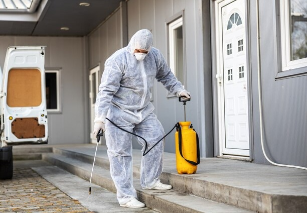
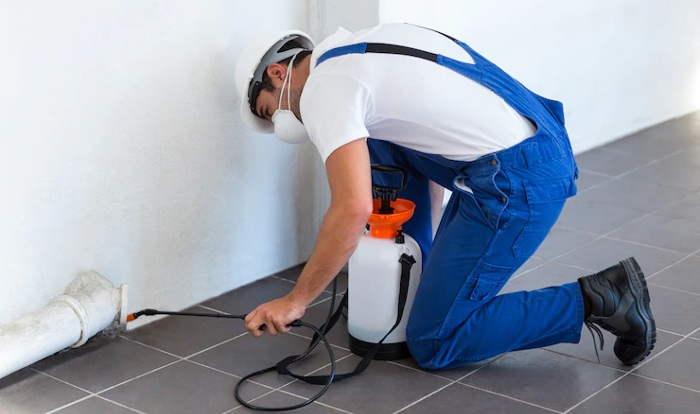

5 Reasons You Need a Pest Control Service
A pest control service doesn’t just keep your home free of crawling insects. They help protect you and your family from allergens, bacteria, and germs, as well as make sure that the animals living in your home are safe from danger. Pest control services are an important part of maintaining a healthy lifestyle, so let’s take a closer look at the reasons you need one
We understand your wish to be inquisitive, do you really require a pest control service? With an abundance of over-the-counter and online pest-control products available, you might find yourself thinking that cutting professionals pest control may improve the situation. But many proverbs state that it is wiser to be careful than to spend a bit of cash, and this certainly holds true in pest control services.
Here are six reasons why you need a pest control service.

1: Ever-Present Pests Mean You Need a Pest Control Service
There are certain pests that homeowners face on a regular basis, and it is important to know what services are available to control them. Some common pests include ants, spiders, mosquitoes, and rodents. It is important to have a pest control service in place in order to deal with these issues effectively.
2: Experience Dealing with the Root Cause of the Issue
When you're experiencing a pest issue, an easy indicator of it is the damage you see on your plants, caused by chewing, clamming and gnawing. pest control agencies can usually tell you precisely where the pests came from and how to stop them, though it can be hard to find the origin of the problems on your own.
In this type of scenario, hiring a professional pest control company more than pays for itself by sparing you time, worry, and frustration. Home solutions may not cost much in the beginning, but their full cost can climb due to subsequent applications and up-to-date complications.
3: Better Equipment to Handle the Situation
In addition to the weapons therapy methods, pest control specialists have advanced weaponry that consumers simply don't. Our exterminators have the commercial-grade tools and resources that just aren't available to consumers. On top of that, they are aware of the various factors that contribute to pest invasions.
4: Comprehensive Health Risk Assessment
We as humans understand that, say, termite infestation can damage your home office. But are you aware that many frequent bugs can harm your wellness? Gift Town, an official government website published by the National Library of Medicine, cites, Dust mites and cockroaches can cause allergic reactions, lung diseases, and other respiratory problems. Cockroaches can carry and spread various diseases, including salmonella. Fire ant stings can cause serious allergic reactions.

The scary thing about that list is that it doesn't even begin to get into the serious injuries that diseases can spread. For instance, rats can transmit the deadly pathogen responsible for the Black Death to this day. Thousands of people die from mosquito-spread encephalitis every year. And fleas can cause typhus and Chaga disease.
5: Accurate Damage Evaluation
Damage evaluation is an important part of pest control and accuracy is essential for effective treatment. The goal of damage evaluation is to determine the amount, location, and severity of damage caused by a pest. This information is used to develop a treatment plan that will be most effective in reducing or eliminating the pest population. Damage evaluation can also help identify any potential health hazards associated with the pests.
In conclusion, pest control services are important for both residential and business properties. They can help to identify and eliminate pests before they cause too much damage. If you are looking for a pest control service, be sure to do your research to find the best company for your needs.